分类
在 Amazon 上 Backpack 分为：
- Casual Daypacks
- Kids’ Backpacks
- Hiking Daypacks
ebags 上的分类：
按用途：
- School Backpacks
- Day Hiking Backpacks
- Laptop Backpacks
- Travel Backpacks
- Backpacking Packs
Gender and Age
- Women’s
- Men’s
- Girls’
- Boys’
- Kids’
School Age
- Toddler and Pre-School
- Elementary School
- Middle School
- High School
- College
Daypack
Ultra-functional school backpack
关于 Carry On 的详细部件介绍 eBags TLS Mother Lode Weekender Convertible Junior - eBags.com
常用的修饰词__
- durable
- cute
- boutique
elegant and fashionable.
Vintage, comfortable/Comfy,
Light weight
beautiful and practical 实用
Adorable 可爱的
Thickened Canvas Laptop Bag/ Shoulder Daypack / School Backpack/ Causal Style Handbag
材料 Material
- Fabric
- Polyester
- Nylon
特点 Feature & Design
This versatile backpack is made for convenience and functionality.
- waterproof/protect/water resistant. this bag is not waterproof but will keep your stuff dry in the rain.
- Light weight/lightweight
- Is there a way to attach to handle of carry-on bag
- the size of laptop can be put into
- Large multi-compartment backpack
- Scientific and reasonable pocket and lining design will make your goods lay in the bag systematically
classical and refining design
Design
- designed to protect and hold your laptop while on the move.
- The backpack features multiple storage compartments and features for additional supplies and accessories.
- They design their products to be durable, functional, and versatile.
flap top design 盖头设计
Single main compartment and front pocket with organizer for smaller items:
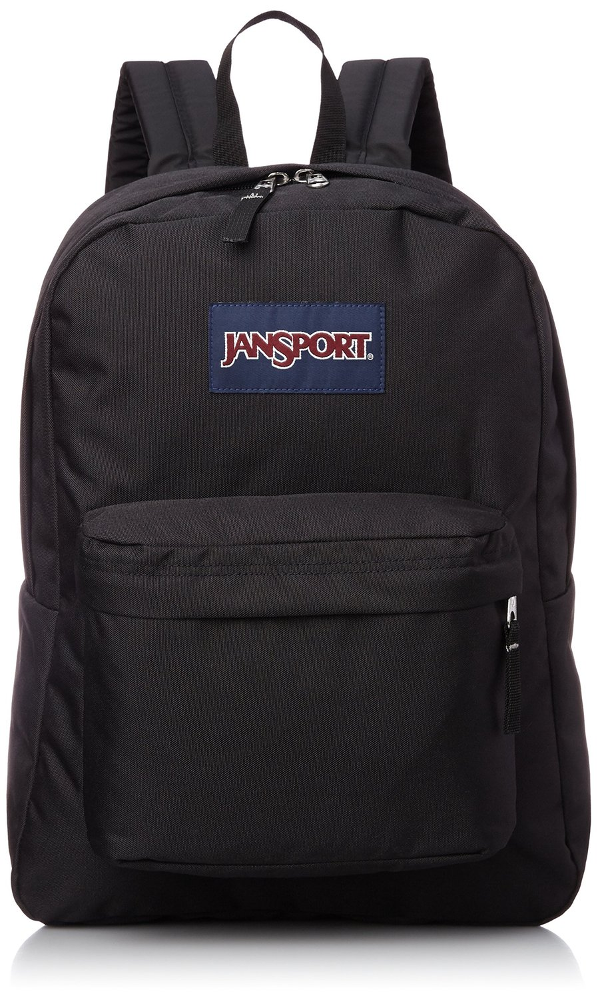
shell shape handbag purse:

Versatile. Personalized stylish looking, ideal for service as bookbag, rucksack schoolbag, casual daypack for daily use at school, work, weekend getaway, occasional travel, gyms, hiking etc.
Nice size admirably suits college students, teen girls boys and adults under 6.2ft in height
The durable, ballistic weave fabric makes the backpack long-lasting.
outdoor backpack, daypack, hiking back pack, school backpack, camping back pack
travel, hiking, school bag, shopping, placing laptop, ipad etc
Shoulder handbag purse-backpack
School, Excursion, Going out, window shopping etc.
Suitable for hiking camping climbing traveling cycling all outdoor activities
Convenient for hiking,traveling,camping,running,cycling,mountaineering.
可能存在的问题:
- The nylon that separates compartments is very thin, and feels like it could easily tear or be punctured.
结构 Constructure
- 1 padded laptop compartment
- 1 thin compartment that can be used for papers and folders
- 1 main compartment that contains vertical dividers to keep things organized, a smaller interior mesh pocket, and an ipod/cell phone pouch that leads to a slit in the top of the backpack for a headphone cord
- 1 decent sized pocket on each side (I use 1 for my laptop charger and accessories)
- 2 stretchy water bottle pockets big enough for the big 1 liter bottles (good for umbrella too)
- 1 small pocket on the top front
- 1 pocket on the bottom front that contains a bunch of small organizer pockets found in every backpack that nobody ever uses
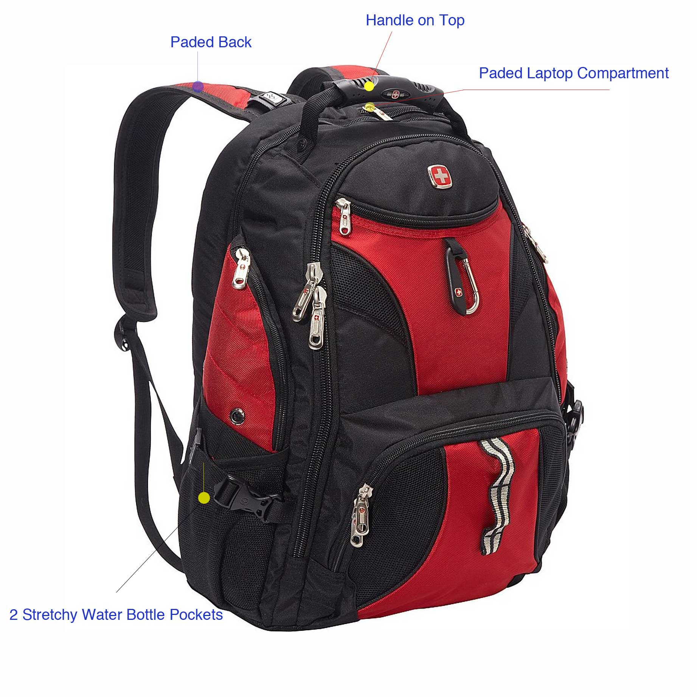
Multi-compartment design
Large main compartments and multiple pockets allow you to keep all of your gear secure and organized.


Shoulder Straps
contoured shoulder straps for enhanced comfort.
cushioned shock absorption.
Ergonomic S-curve shoulder straps
Shoulder harness
nylon webbing straps
Ergonomic adjustable, padded shoulder straps keep the pressure off
Adjustable padded laptop straps inside to fit different size laptops.
S-shaped, VAPEL mesh AIRFLOW padded shoulder straps with Suspension System with removable media pocket
Padded S-shaped shoulder straps with Suspension System. 这个悬挂系统指的就是 Sunglass 挂钩。: The Suspension System provides relief when carrying heavier loads. It does so by dampening the shock of weight transfer while transporting your gear.
The specially contoured shoulder straps are ergonomically designed with added padding for comfort and control.
Straight-cut, padded shoulder straps 直切软垫肩带
Carry Comfortably: These are no simple backpack straps. Constructed with highly durable materials which are designed to balance out the weight of your bag, this backpackgives you the freedom to pack up and head out without the inconvenience of backpack fatigue. Heavily-padded and shock-absorbing shoulder straps give you the freedom to move comfortably so you can move forward with your day.
Rucksacks with Adjustable strap to make sure everything stays securely in place and holds almost anything you would need in several.
Padded Shoulder Straps 软垫肩带

Breathable mesh shoulder straps:
Front Pocket
Front wide zippered pocket for convenient stashing storage.
Front zip pocket keeps favorite things in easy reach
Secondary compartment has internal organization with a secure zippered pocket,

Side Mesh Pockets
- side mesh pockets for keys.
- Mesh beverage pocket

Large Side Zip Pockets
Large side zip pockets for water bottles or laptop chargers etc.
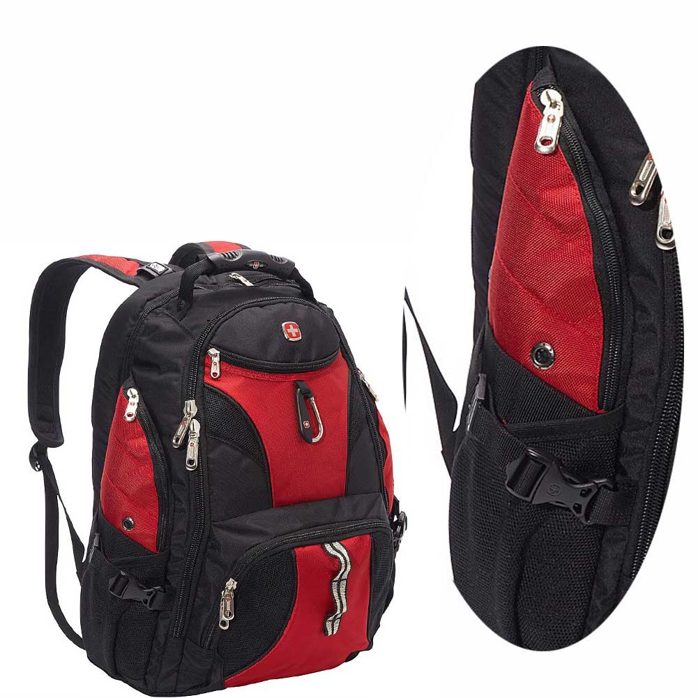
Water bottle pocket
The external dual pockets are made of elasticized mesh, which expands to secure various size water bottles.
Multi-compartment design with side mesh water bottle pockets.
Stretch-woven pockets accommodate a wide range of water bottle shapes and sizes

Audio Interface
Audio and Media Pocket, Equipment Safe
Mobile phone pocket to keep you organized
Easy-access deluxe media pocket holds various sizes of cell phones, PDA’s, and MP3 players.

Tablet Pocket
Floating TabletSafe tablet pocket for superior electronics protection.
Dedicated, padded pocket that holds most 17” laptops is raised off the ground to protect electronics from impact
Versatile padded sleeve designed for a 3L hydration system or a 15” laptop
Padded, fleece-lined tablet sleeve located in the front compartment for quick access

Laptop Compartment/Storage
an easy access laptop compartment. padded laptop compartment.
Padded computer sleeve.
Dedicated, lie-flat, fleece-lined laptop compartment allows for protected, checkpoint-friendly travel
Fully-padded CUSHION ZONE computer sleeve fits most 17” laptops
A fully padded CushionZone laptop compartment accommodates most 17-inch models. A dedicated TechSpot sleeve provides an ideal space for your tablet.
Highly protective laptop-only compartment with adjustable divider designed to fit most portable computers up to 17” in size. Fits most 17-inch laptops. Holds up to 17” notebook computer
The compartment even has an adjustable padded strap to fit different laptop sizes and quick side entry access.
有的客户认为：The opening for the laptop is on the side (not the top) which makes it a little awkward to get in and out. Not a big deal though.
I would have liked a little more padding underneath the laptop. The amount of padding is pretty similar to most other laptop cases though. You just need to be careful about setting it down to hard.
Open Viewing Comparent: Unique quick recognition window design accommodates most 17” laptops
可能存在的问题：
- Laptop compartment is too lightly padded. 笔记本区域的填充物不够。
- The back of the laptop backpack is padded, but the cardboard behind it bends and is right next to the laptop compartment inside. ??

Laptop and tablet storage：A fully padded CushionZone laptop compartment accommodates most 17-inch models. A dedicated TechSpot sleeve provides an ideal space for your tablet.
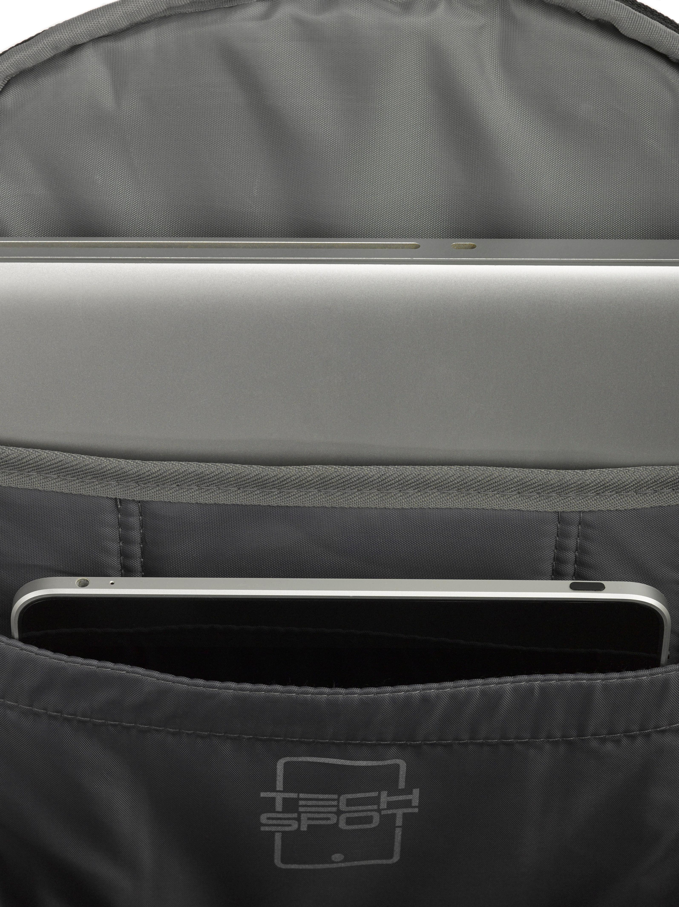
Main Pocket
The main pocket provides protected packing for multiple binders, gaming peripherals, and other accessories.
With lots of pockets within the main compartment, which can carry all of your necessities around you.Large capacity design, most of your living necessities can be loaded freely
Dual-zip main compartment for secure, spacious storage.
Spacious large main compartment holds your daily essentials easily.
Large packing capacity to fit binders and anything else you need.
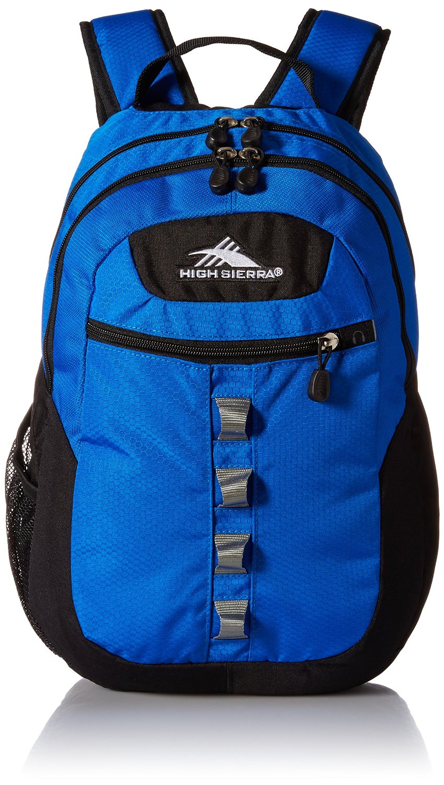
Built-in padded laptop sleeve perfect for most 15.6” laptops, extra integrated storage pocket for 10” iPad tablet

there are seven organizational pockets within the main compartment designed for all of your urban gadgets: wallet, pens, camera, portable chargers, mouse, iPod, samll toys, handy beauty tools etc.
Organizer Pocket/Bottom Front Pocket
Multi-pocket organzier with key fob: Multiple pockets including a zippered mesh pocket, pen pockets, lidded media pocket and key fob hook are perfect for keeping all of your smaller items secure.
The interior pocket organizer provides divider pockets for pens, pencils, cellphone, and anything else you need.
1 pocket on the bottom front that contains a bunch of small organizer pockets found in every backpack that nobody ever uses.
Front organization panel keeps small items in place and makes finding them a breeze
Zippered laminated mesh pocket inside is perfect for travel documents 主袋内的网袋
External fleece-lined pocket for sunglasses or electronics
Front compartment has internal organization with a fleece-lined media pocket, secure zippered pocket and elastic webbing for cord management
Front compartment has internal organization with a fleece-lined media pocket, secure zippered pocket and elastic webbing for cord management 也可以配一个羊毛里布用于放置眼镜和手机等。
常用的做法：
 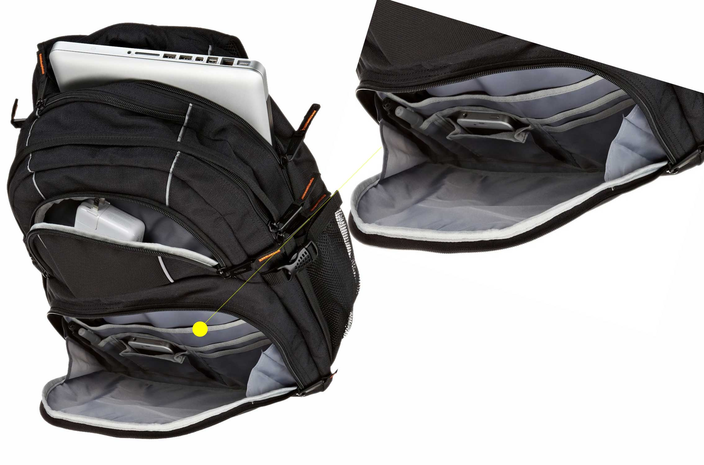
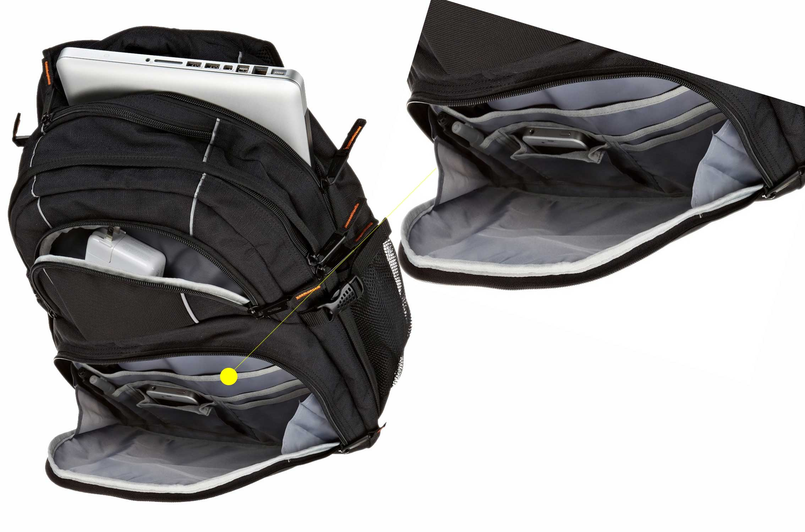

Lay-flat Design
Unobstructed(通常的), lay-flat design（凭证设计）, helps speed through airport security(TSA X-ray machines)
With this backpack, getting through airport security is quicker and easier. The laptop compartment opens quickly at the security checkpoint and the laptop window makes your computer visible while scanning. So, your computer stays inside your bag while it’s scanned.
The laptop computer compartment is airport friendly allowing you to keep your computer safe when passing through security. At checkpoint, unfolds to flat position, keeping above and below the laptop sections clear.
The unique quick-recognition window design makes going through security less of a hassle.

Airflow Back System
Airflow Back System: Multi-panel airflow design provides extra padding for comfort and maximum back support
AIRFLOW back panel

Sunglass Holder
There is an elastic tab on the shoulder strap that keeps sunglasses secure and conveniently accessible.
The Suspension System provides relief when carrying heavier loads. It does so by dampening the shock of weight transfer while transporting your gear.

外袋的垂直拉链口常用于放置太阳镜。
Adjustable side compression straps
可调侧腰缩带。
Removable Key Fob
Organizer with key fob
a removable key fob to help you keep track of your keychain.

Padded back panel
Padded backrest
air exchange of bearing system
Increase air cushion gasket back and waist,breathable mesh and inner filling soft interlayer sponge,buffer shock absorption,reduce the pressure of body contact area,further enhance with comfort
thickening sponge
Padded back panel ensure cushioning comfort.
Padded back panel: Padding in the back panel provides comfort when carrying your gear.
the thickening sponge protection a good protection; it can effectively reduce the burden
Reduce the burden system design

Cool Durability: Breathable mesh panels on the backside of the pack provide a comfortable carrying experience for the long-haul, alleviating the discomfort of strenuous and perspiring jaunts! Plus, a secret zipper compartment on the backside of the backpack is the perfect hiding spot for a wallet, keys or an ID.
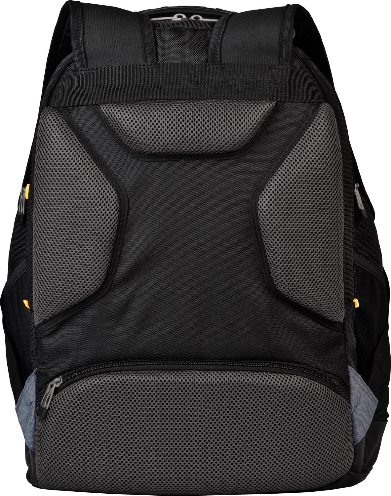
The FlexVent™ suspension system boasts custom injection-molded shoulder straps, a padded mesh back panel with a spine channel and a wicking lumbar panel for maximum support and ventilation
TODO
Padded bottom panel
可能存在的问题：
- A reinforced bottom with another layer of canvas or leather, would be good for durability. 底部不耐用，容易磨损。
Monster hook
Media pocket integrated on shoulder strap
Integrated media pocket: A clever mesh pocket located on the shoulder strap is ideal for quick access items like a cell phone or MP3 player.
Deluxe media pocket, with headphone port

Also features a port for headphone wires on the top of right

Adjustable sternum strap
Sternum strap with whistle buckle
可调节的胸带
Daisy chain loops for attaching extra gear
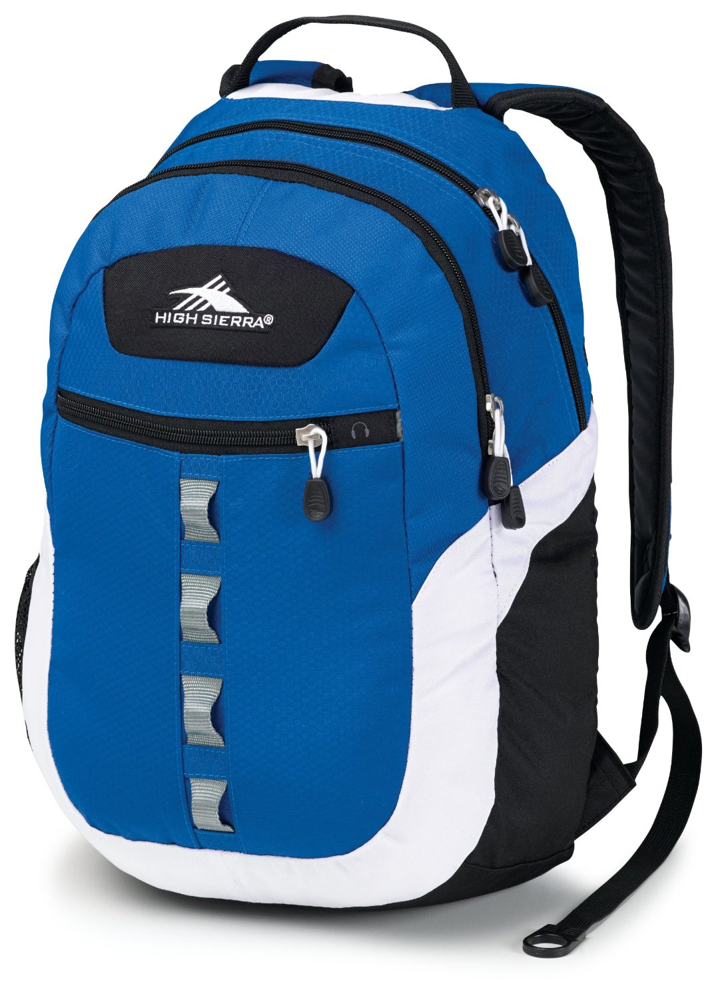
Wheels
Smooth rolling, corner-mounted wheels
Inline skate style wheels are corner mounted for stability and provide a smooth ride. Molded feet provide added stability.
The telescoping handle stores neatly under the zippered cover.

Soft and noiseless wheels for stable and controlled motion
Reflective strip for added safety
Reflective bike-light loop, reflective water bottle tabs and reflective shoulder strap create 360-degrees of reflectivity
Handle
Top grab handle/Top-mounted, reinforced haul handle
The top grab handle offers quick grab-and-go mobility
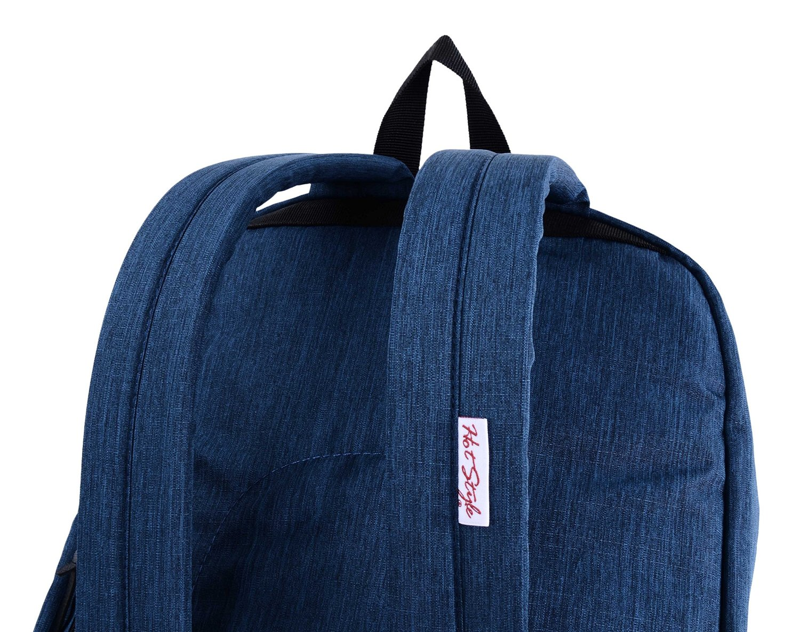
Hideaway telescoping handle/Telescoping

Sturdy molded plastic handle supported by metal grommets and cabling

Telescoping single handle 伸缩手柄
Bottom
Rugged, anti-slip faux leather bottom stabilizes bag on the ground and protects the bag from dirt and wet.

Back Pocket
Bonus external zipper pocket on the back provide an easy access to the most-used items such as cellphone or keys.
Side sleeve Pocket
Side access exposed mixed metal zippered sleeve pocket

Adjustable waist strap
Adjustable shoulder strap and waist strap to fit your need.
Removable waist belt

D-door
Front zippered D-door easily opens into a large compartment for gym clothes or shoes
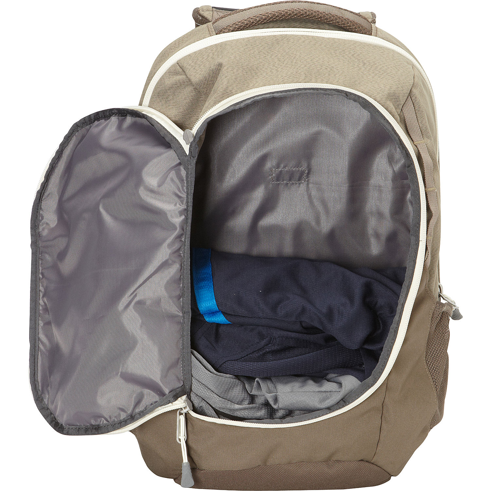
Large top-loading main compartment

Crush-proof AC-Adapter garage
Crush-proof AC-Adapter garage that isolates heavy (or fragile) accessories from the rest of the pack. Positioned at the bottom for better load balancing. Removable for those times when you need extra storage capacity

Closure
- zipper closure
- lockable zippers
- Leather zipper pulls
Snap closure
Magnetic flap closure/Snap closure/Magnetic strap closures with metal pin clips.
magnetic strap closures with metal pin clip
Buckle closure
Main compartment cinch top closure
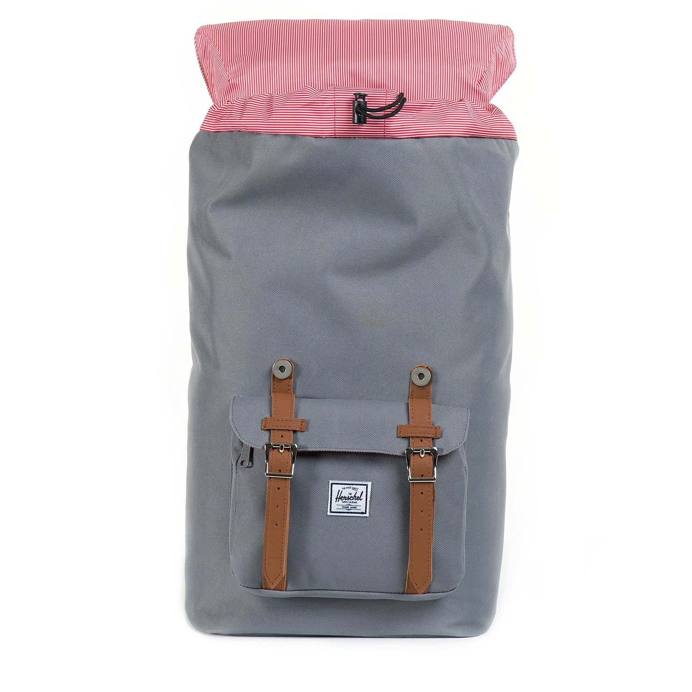
Adjustable drawstring closure
Thick gauge cording witheasy drawstring closure

snap fastener
Branded magnetic mixed metal snap fastener.

diagonal zipper
High strength zinc alloy resin zipper
magnetic buckles
磁性搭扣
Full expansion zipper
Full expansion zipper adds over 10 percent of volume for all those treasures you pick up along on your journey

hip belt zip/U-zipper
hip belt zip away for checking luggage
Full-access U-zipper allows the Redwing to work as both a top-loader and a panel loader, adding convenience to any adventure.

Hip belt
Padded, tuck-away, load bearing hip belt to carry up to 70% of the load
腰带
FAQ
- BP1009 材料。
- 17 英寸电脑的长宽。
- Airflow Backing System